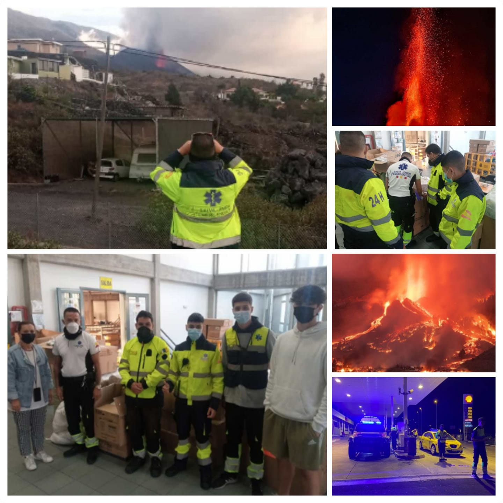
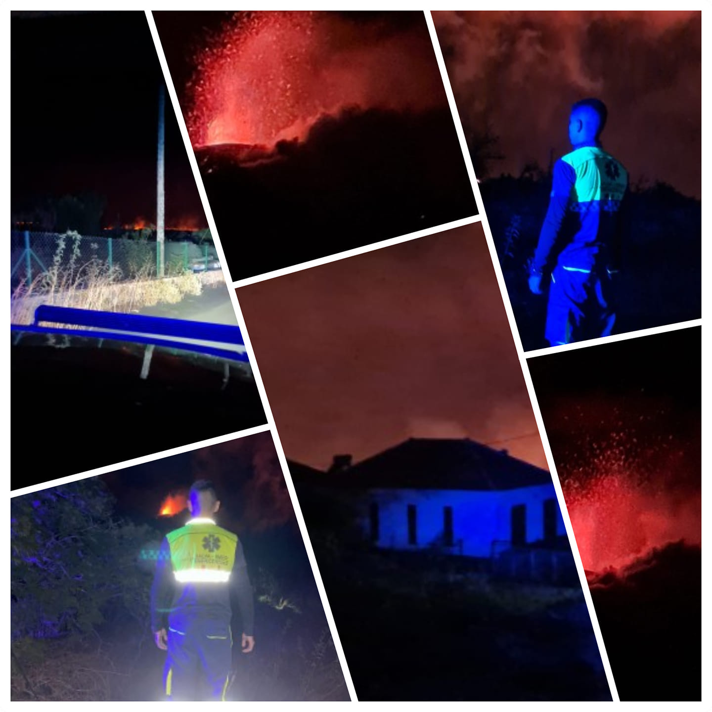
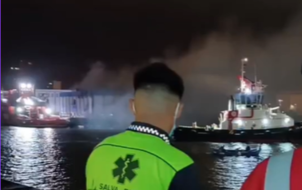
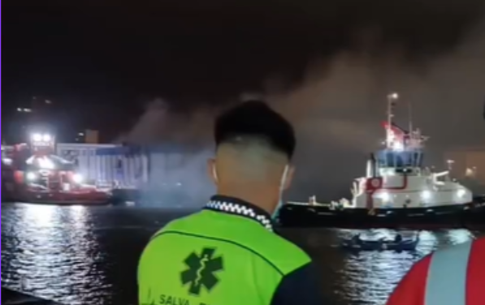

ES
ES
 EN
EN
 DE
DE
 FR
FR
 NO
NO
 IS
IS
Salva-Emer í aðgerð
Vitnisburður og framúrskarandi verkefni með myndum og myndskeiðum af vel heppnuðum úrræðum okkar.
Neyðarástand við eldgosið á La Palma
Skipuleggjandi: RedCOE | Tímalengd: 4 mánuðir | Hópur: 16 sérfræðingar
Salva-Emer gegndi lykilhlutverki í eldgosakreppunni og veitti öryggi og mannúðaraðstoð.
Fasi 1
- Öryggisgæsla í hættusvæðum
- Fólksflutningar og rýming
- Dreifing hjálpargagna
Fasi 2
- Flutningur og stuðningur fyrir fjölskyldur
- Öruggur aðgangur til að sækja eigur
- Dýrabjörgun


Skógareldar á Tenerife og Gran Canaria
Skipuleggjandi: Stjórnvöld á Kanaríeyjum
- Rannsókn á landssvæði
- Rýming íbúa
- Aðstoð við björgun dýra og samstarf við slökkvilið
 

DANA í Valencíu
Skipuleggjandi: Stjórnvöld í Valencíu | Tímalengd: 15 dagar | Hópur: 4 björgunarmenn
- Hreinsun á rusli
- Dreifing hjálpargagna
- Samræming með sjálfboðaliðum